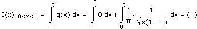
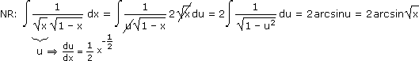
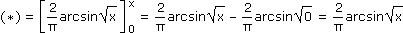
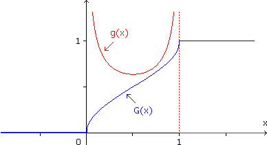

Aufgabe 2: Bestimme a) die Verteilungsfunktion G(x) und damit die Wahrscheinlichkeit P(0,8 ≤ X ≤ 2), b) die Quantilfunktion G–1(α) und damit das 0,83-Quantil einer stetigen Zufallsvariablen X mit Dichtefunktion
Hintergrund: Wir beginnen mit einem Zufallsexperiment, bei dem ein Teilchen auf Position k entweder mit Wahrscheinlichkeit p zur Position k+2 weiterspringt oder mit Wahrscheinlichkeit q zur Position 0 zurückgeworfen wird, wobei der Erwartungswert bei k+1 liegen soll ( p, q).
p, q).
Wenn wir das Teilchen auf Position 0 setzen, dieses Experiment n-mal ausführen und die Endposition in Prozent der Extremposition 2n angeben, ist das eine Zufallsvariable X, deren Wahrscheinlichkeitsdichte mit zunehmendem n zum obigen g(x) wird.
g(x) =  ·, 0 < x < 10, sonst
·, 0 < x < 10, sonst
1
π
1
√x(1 – x)
Hintergrund: Wir beginnen mit einem Zufallsexperiment, bei dem ein Teilchen auf Position k entweder mit Wahrscheinlichkeit p zur Position k+2 weiterspringt oder mit Wahrscheinlichkeit q zur Position 0 zurückgeworfen wird, wobei der Erwartungswert bei k+1 liegen soll (
p, q).Wenn wir das Teilchen auf Position 0 setzen, dieses Experiment n-mal ausführen und die Endposition in Prozent der Extremposition 2n angeben, ist das eine Zufallsvariable X, deren Wahrscheinlichkeitsdichte mit zunehmendem n zum obigen g(x) wird.
a) 



Aufgabe 4: Bestimme den Luftduck y auf Seehöhe x durch exponentielle Regression, wenn
Hinweis: Setze y^ = lny (2 Nachkommastellen) und bestimme y^(x) durch lineare Regression.
| x (in km) | 5 | 10 | 15 |
| y (in hPa) | 652 | 235 | 202 |
Hinweis: Setze y^ = lny (2 Nachkommastellen) und bestimme y^(x) durch lineare Regression.
| x | 5 | 10 | 15 |
| y^ | 6,48 | 5,46 | 5,31 |
y^(x) = a + bx
q(a,b) = (6,48 – a – 5b)2 + (5,46 – a – 10b)2 + (5,31 – a – 15b)2
(1)
∂q
∂a
(2) = 2/(6,48 – a – 5b)(–5) + 2/(5,46 – a – 10b)(–10) + 2/(5,31 – a – 15b)(–15) = 0
∂q
∂b
(1) 3a + 30b = 17,25
(2) 30a + 350b = 166,65
a = 6,92, b = –0,117
y^ = lny = 6,92 – 0,117x e(.)
y = e6,92e–0,117x = 1012e–0,117x